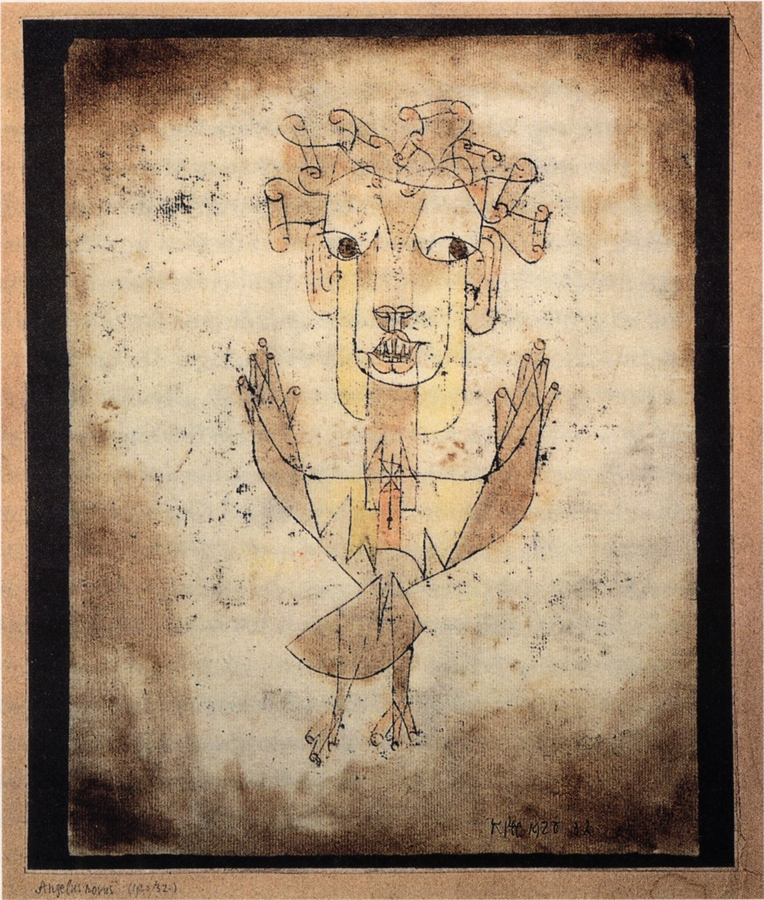
Paul Klee，〈新天使〉（Angelus Novus），1920 走向救贖
Towards Redemption
「時間的分分秒秒都可能是彌賽亞側身步入的門洞。」CHI 4335 · Week 13 · Towards Redemption
← → 翻頁 · 1 –9 章節 · G 跳至頁碼 · L 雷射筆 · F 全螢幕
第 2 週的問題
Susan Sontag, Regarding the Pain of Others （2003）
「抗議災痛的意義為何？Sontag，《旁觀他人之痛苦》，第三章
What does it mean to protest suffering, as distinct from acknowledging it?
十二週以來，我們讀了大饑荒、集中營、勞改營、地震、屠殺、原子彈和私刑。讀完之後，我們還能為死者做些甚麼？
本雅明的答案：救贖（Erlösung）。
本雅明（Walter Benjamin，1892–1940）
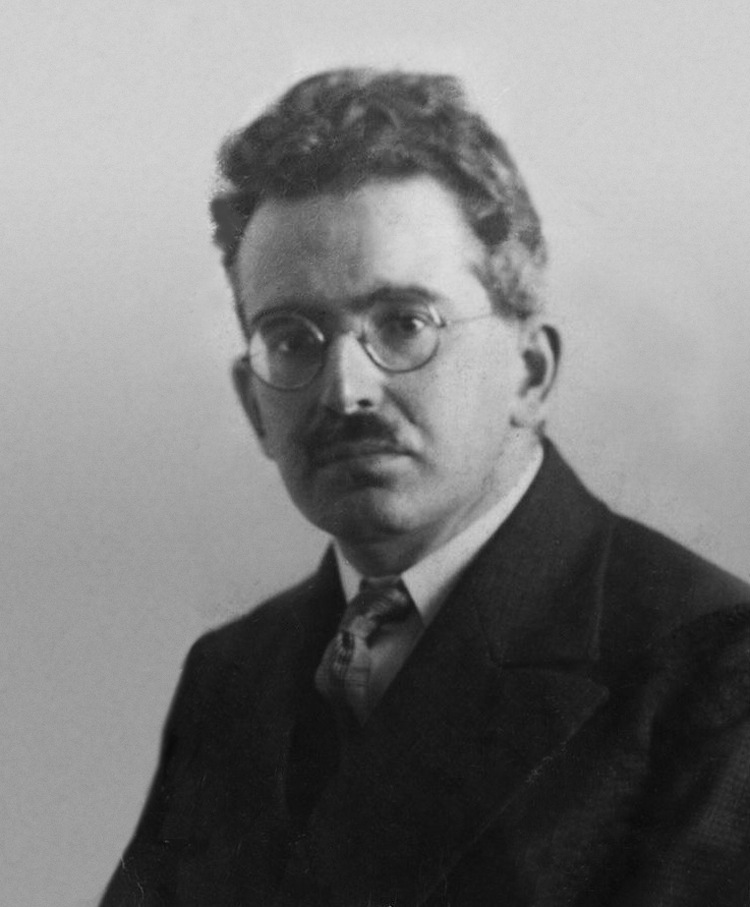
本雅明，約 1928
1892
生於柏林（Berlin）一個富裕的猶太家庭。
1925
教授資格論文《德國悲劇的起源》被法蘭克福大學退回，從此以評論、翻譯和電台節目為生。
1933
納粹上台，流亡巴黎（Paris），寫〈機械複製時代的藝術作品〉，收集《拱廊街計劃》的材料。
1940
寫成〈論歷史概念〉。9 月 26 日死於西班牙邊境小鎮波特沃（Portbou）。
1939–1940：寫作的處境
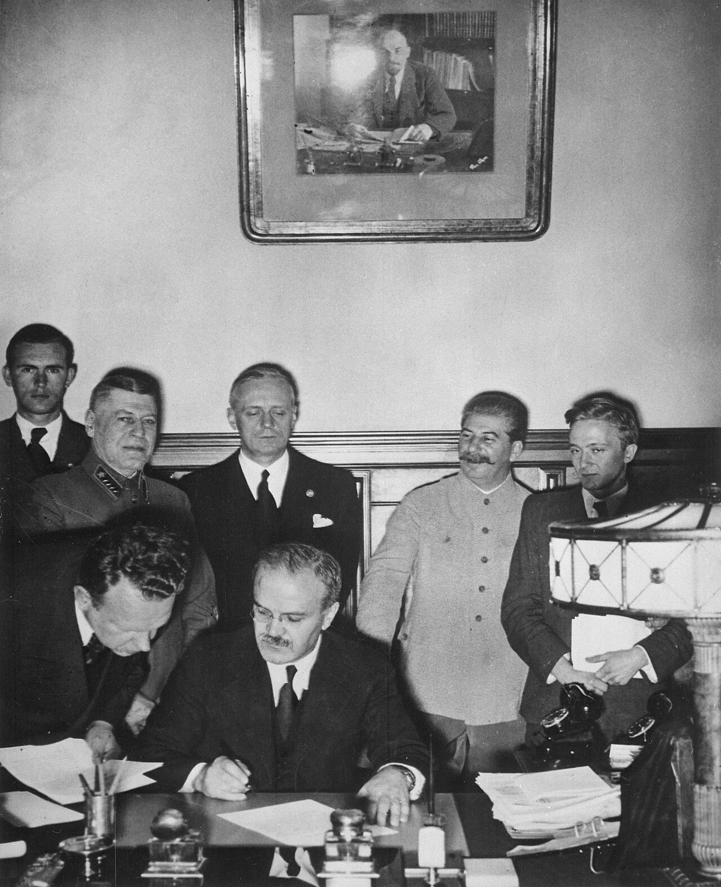
莫斯科（Moscow），1939 年 8 月 23 日：Molotov 簽署《蘇德互不侵犯條約》，Ribbentrop 與 Stalin 站在後面。
· 譯者按：條約的簽訂是寫作〈論綱〉的「一個直接引發事件」。許多左派曾相信蘇聯會對抗法西斯。
· 1940 年 6 月，德軍佔領巴黎。本雅明逃到法國南部，在馬賽（Marseille）把手稿交給 Hannah Arendt。
· 9 月，他翻越庇里牛斯山（Pyrenees）到達 Portbou。西班牙警察要把他遣返法國，當晚他服下過量嗎啡。
在神秘主義與馬克思主義之間
Gershom Scholem 本雅明的摯友，猶太神秘主義（卡巴拉）的研究者，1923 年移居耶路撒冷（Jerusalem）。他帶來彌賽亞、救贖與末日的語言。
法蘭克福學派 社會研究所（1924）：Adorno、Horkheimer 的「批判理論」。流亡期間，本雅明靠研究所的津貼生活。他帶來歷史唯物主義與階級鬥爭的語言。
這兩種語言，能在同一篇文章裏說話嗎？
卡巴拉：器皿破碎與修復世界
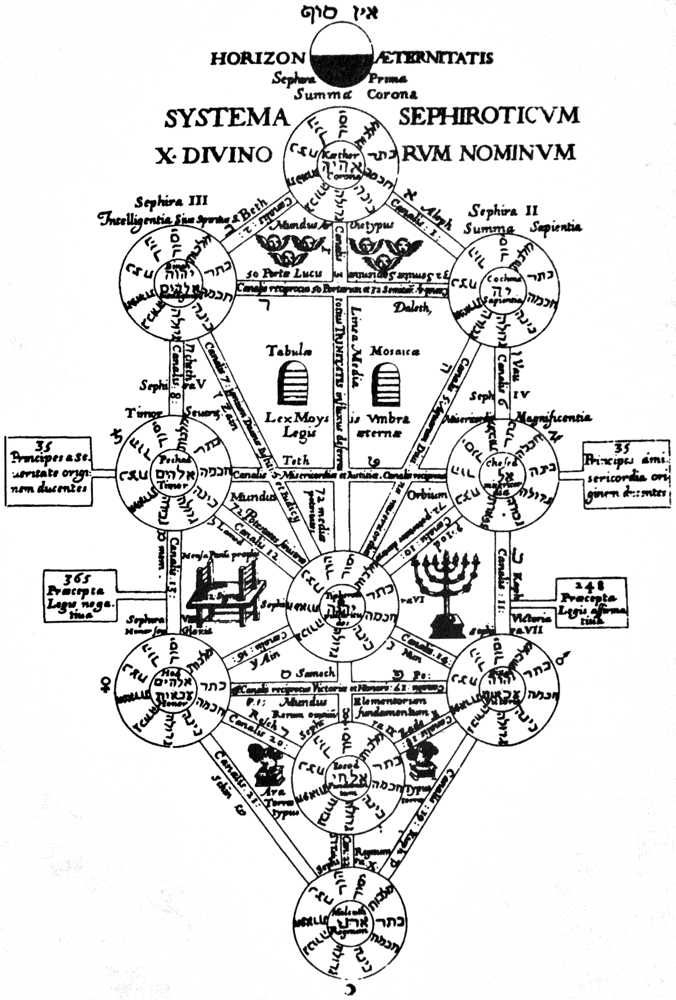
卡巴拉的「生命之樹」：十個「源質」（Sephirot）。Athanasius Kircher，1652
· 卡巴拉（Kabbalah）是猶太教的神秘主義傳統，在十二、十三世紀的西班牙和法國南部成形。
· 十六世紀的盧里亞（Isaac Luria）說：創世時，盛載神聖之光的器皿破碎 了，光的火花散落在物質世界裏。
· 人的行為可以收集火花，修復世界 （Tikkun Olam）。修復完成之時，就是彌賽亞的救贖。
· 第九條：天使「想停下來喚醒死者，把破碎的世界修補完整」。
文本：〈論歷史概念〉
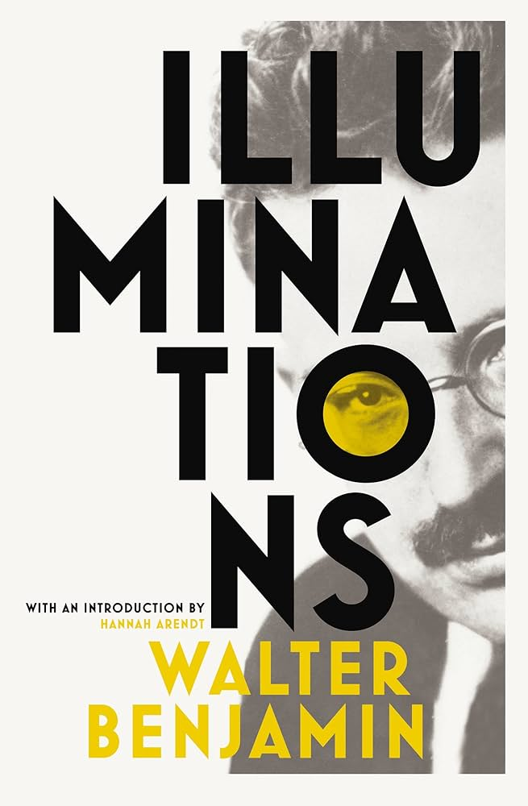
Arendt 編的英文選集 Illuminations （1968）收入了這篇文章。
· 原題〈論歷史概念〉（Über den Begriff der Geschichte），十八條「論綱」加上 A、B 兩條附錄。
· 本雅明寫信說，這些筆記不是為了發表而寫的。1942 年社會研究所在紐約以油印本刊出，紀念他的去世。
· 中譯：張旭東（1997）。每一條都很短，像格言，又像禱告。
· 今天我們按順序讀其中的十幾條。
第一條：下棋的木偶
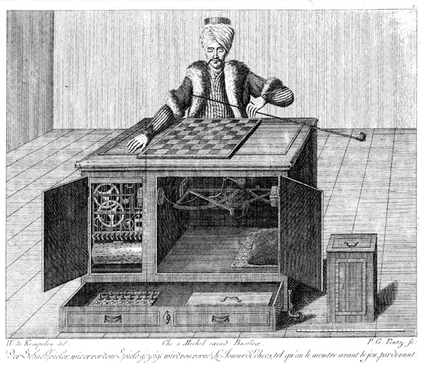
Kempelen 的下棋機「土耳其人」（1770）。Racknitz 1789 年的銅版畫猜測了藏在箱子裏的人。 「據說有一種能和人對弈的機械裝置，你每走一步，它便回應一手。表面上看，和你下棋的是個身着土耳其服裝，口叼水菸袋的木偶。它端坐在桌邊，注視着棋盤，而一組鏡子給人一種幻覺，好像你能把桌子的任何一側都看得清清楚楚。其實，一個棋藝高超的駝背侏儒正藏在遊戲機裏，通過線繩操縱木偶。我們不難想象這種詭計在哲學上的對應物。這個木偶名叫『歷史唯物主義』，它總是會贏。要是還有神學助它一臂之力，它簡直戰無不勝。 只是神學如今已經枯萎，難當此任了。」第一條
木偶 ＝ 歷史唯物主義 ← 駝背侏儒 ＝ 神學
第二條：微弱的救世主力量
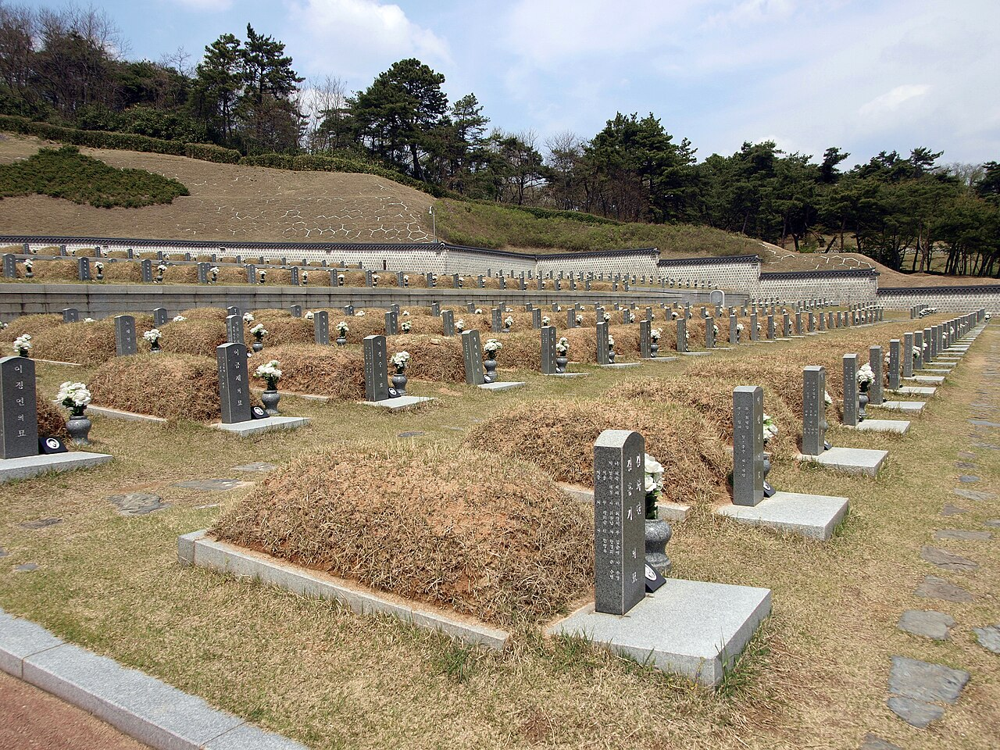
光州（Gwangju）國立五一八民主墓地 「洛採（Lotze）說過，『人類天性中最堪稱奇之處是我們對眼前之物珠錙必較，對於未來卻毫無妒意。』對此稍作思考便會發現，我們關於快樂的觀念和想象完全是由我們生命過程本身所指定的時間來決定其特性和色彩的。那種能喚起嫉妒的快樂只存在於我們呼吸過的空氣中，存在於能和我們交談的人，或本可以委身於我們的女人身上，換句話說，我們關於幸福的觀念牢不可破地同贖救的觀念聯繫在一起。 這也適用於我們對過去的看法，而這正切關歷史。過去隨身帶着一份時間的清單，它通過這份時間的清單而被託付給贖救。過去的人與活着的人之間有一個祕密協議。 我們的到來在塵世的期待之中。同前輩一樣，我們也被賦予了一點微弱的救世主的力量 ，這種力量的認領權屬於過去。但這種認領並非輕而易舉便能實現。歷史唯物主義者們知道這一點。」第二條
第 7 週《少年來了》：韓江用「你」稱呼死去的少年東浩。死者在等待活着的人。
第三條：編年史家與末日審判
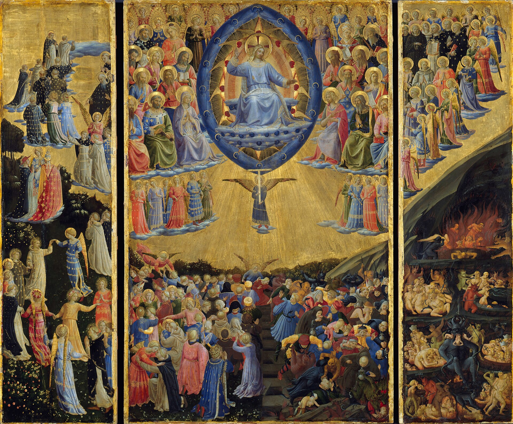
Fra Angelico，〈最後的審判〉，約 1450 「把過去的事件不分主次地記錄下來的編年史家依據的是這樣一條真理：任何發生過的事情都不應視為歷史的棄物。 當然，只有被贖救的人才能保有一個完整的，可以援引的過去，也就是說，只有獲救的人才能使過去的每一瞬間都成為『今天法庭上的證詞』——而這一天就是末日審判。」第三條
這學期的書裏，誰被當成了歷史的「棄物」？
第五條：過眼煙雲
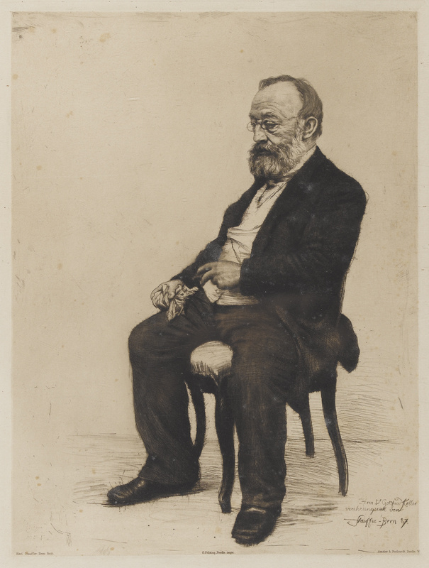
Gottfried Keller（1819–1890），瑞士作家：「真實不會逃之夭夭。」 「過去的真實圖景就像是過眼煙雲，他唯有作為在能被人認識到的瞬間閃現出來而又一去不復返的意象才能被捕獲。 『真實不會逃之夭夭，』在歷史主義歷史觀中，哥特弗裏德·凱勒（Gottfried Keller）的這句話標明了歷史主義被歷史唯物主義戳穿的確切點。因為每一個尚未被此刻視為與自身休慼相關的過去的意象都有永遠消失的危險。過去的歷史學家心臟狂跳着帶來的喜訊或許在他張口的剎那就已消失在空寂之中。」第五條
第六條：危險關頭閃現的記憶
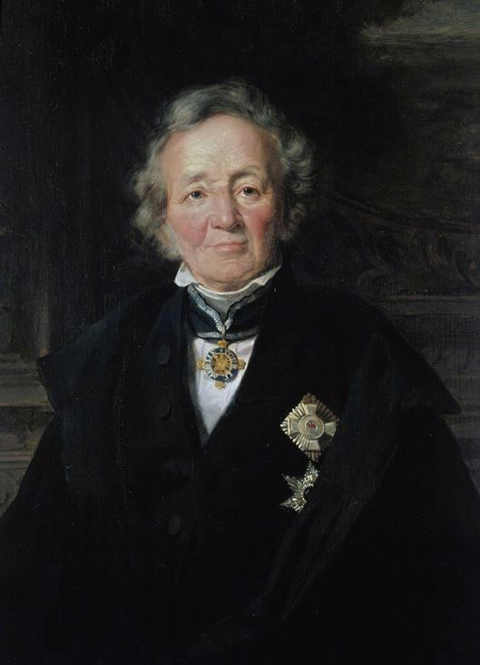
Leopold von Ranke（1795–1886）：歷史要寫出「它本來的樣子」（wie es eigentlich gewesen）。 「歷史地描繪過去並不意味着『按它本來的樣子』（蘭克）去認識它，而是意味着捕獲一種記憶，意味着當記憶在危險的關頭閃現出來時將其把握。 歷史唯物主義者希望保持住一種過去的意象，而這種過去的意象也總是出乎意料地呈現在那個在危險的關頭被歷史選中的人的面前。這種危險既影響了傳統的內容，也影響了傳統的接受者。兩者都面臨同樣的威脅，那就是淪為統治階級的工具。同這種威脅所做的鬥爭在每個時代都必須賦予新的內容，這樣方能從佔絕對優勢的隨波逐流習性中強行奪取傳統。救世主不僅作為拯救者出現，他還是反對基督的人的征服者。只有歷史學家才能在過去之中重新燃起希望的火花。過去已向我們反覆證明，要是敵人獲勝，即便死者也會失去安全。 而這個要做勝利者的敵人從來不願善罷甘休。」第六條
「即便死者也會失去安全」
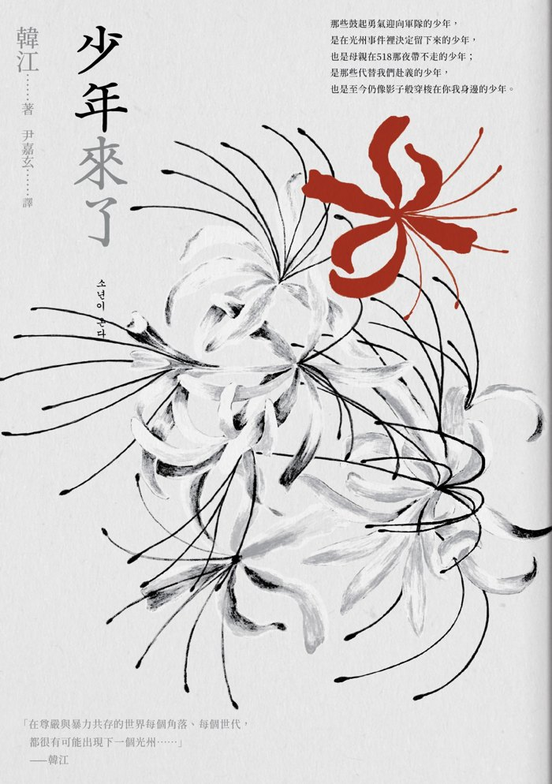
韓江，《少年來了》
「只有歷史學家才能在過去之中重新燃起希望的火花。過去已向我們反覆證明，要是敵人獲勝，即便死者也會失去安全。 而這個要做勝利者的敵人從來不願善罷甘休。」第六條
光州的死者被官方稱為「暴徒」。勝利者不只殺人，還要決定死者將被怎樣記住。
第七條（上）：寄與勝利者的移情
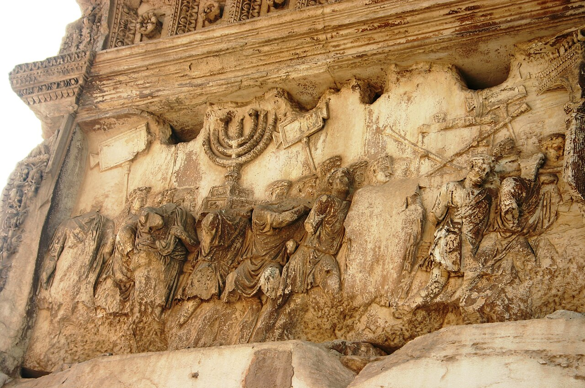
提圖斯凱旋門（Arch of Titus）浮雕，羅馬（Rome），公元 81 年後：士兵抬着從耶路撒冷聖殿掠走的燈臺。 噢，這黑暗而寒冷的山谷／充滿了悲慘的回聲Brecht，《三分錢的歌劇》
「富斯代爾·德·庫朗日（Fustel de Coulanges）建議那些要重新體驗一個時代的歷史學家把自己關於後來的歷史過程的知識統統抹殺掉。這再好不過地描繪出一種方法特徵。歷史唯物主義則正是要破除這種方法。這種方法本身是一個移情過程，其根源在於思想的懶惰和麻木。在於對把握真實而短暫的歷史形象的絕望。中世紀的神學家們認為這是悲哀的根本原因。福樓拜（Flaubert）對此瞭然於心。他寫道：『很少有人能揣度一個為迦太基的復興而活着的人是多麼悲哀。』要是我們追問歷史主義信徒的移情是寄與誰的，我們就能更清晰地認識那種悲哀的本質。問題的答案是不可避免的：寄與勝利者。 一切統治者都是他們之前的征服者的後裔。因而寄與勝利者的移情總是一成不變地使統治者受益。……」第七條
第七條（下）：文明的豐碑，野蠻的實錄
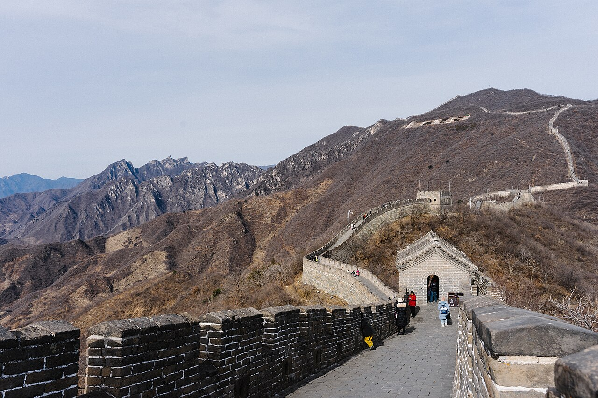
長城。民間傳說孟姜女哭倒長城，記住的是築城而死的無名勞工。 「……歷史唯物主義者明白這意味着什麼。登上勝利寶座的人在凱旋的行列中入主這個時代，當下的統治者正從匍匐在他腳下的被征服者身上踏過。 按照傳統做法，戰利品也由凱旋隊伍攜帶着。這些戰利品被成為文化財富。歷史唯物主義者看這些文化財富時帶着一種謹慎的超然態度，因為他所審視的文化財富無一例外可以追溯到同一個源頭。對此，歷史唯物主義者不能不帶着恐懼去沉思。這些財富的存在不僅歸功於那些偉大的心靈和他們的天才，也歸功於他們同時代人的無名的勞作。沒有一座文明的豐碑不同時也是一份野蠻暴力的實錄。 正如文明的記載沒有擺脫野蠻，它由一個主人到另一個主人的流傳方式也被暴力敗壞了。因而歷史唯物主義者總是儘可能切斷自己同它們的聯繫。他把同歷史保持一種格格不入的關係視為自己的使命。」第七條
There is no document of civilization which is not at the same time a document of barbarism. … He regards it as his task to brush history against the grain.
第八條：緊急狀態是常規
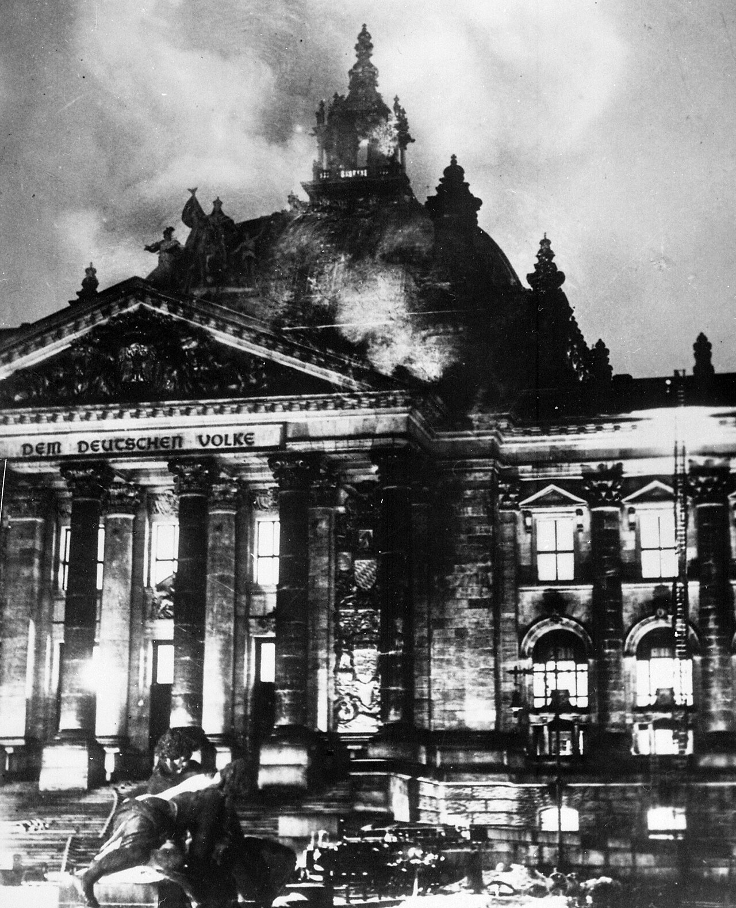
國會大廈起火，柏林（Berlin），1933 年 2 月 27 日。第二天頒布的緊急法令一直生效到 1945 年。 「被壓迫者的傳統告訴我們，我們生活在其中的所謂『緊急狀態』並非什麼例外，而是一種常規。 我們必須具有一個同這一觀察相一致的歷史概念。這樣我們就會清楚地意識到。我們的任務是帶來一種真正的緊急狀態，從而改善我們在反法西斯鬥爭中的地位。法西斯主義之所以有機可乘，原因之一是它的對手在進步的名義下把它看成一種歷史的常態。我們對正在經歷的事情在二十世紀『還』會發生感到驚詫 ，然而這種驚詫並不包含哲理，因為它不是認識的開端，它還沒有認識到它由以產生的歷史觀本身是站不住腳的。」第八條
Hobsbawm 把二十世紀稱為「極端的年代」。這學期的哪一本書裏，「緊急狀態」成了日常？
〈新天使〉
Paul Klee，〈新天使〉（Angelus Novus），1920，油彩轉印與水彩
· 1921 年本雅明在慕尼黑（Munich）買下這幅畫，一直掛在書房裏，流亡時也帶到巴黎。
· Scholem 為它寫過一首詩〈天使的問候〉，第九條開頭的題詞就出自這首詩。
· 本雅明死後，畫輾轉到了 Scholem 手裏，今天藏在耶路撒冷的以色列博物館。
· 仔細看：天使的眼睛、嘴、翅膀和頭髮。
第九條：臉朝着過去
我的雙翅已振作欲飛／我的心卻徘徊不前／如果我再不決斷／我的好運將一去不回Gershom Scholem，〈天使的問候〉
「保羅·克利（Paul Klee）的《新天使》畫的是一個天使看上去正要從他入神地注視的事物旁離去。他凝視着前方，他的嘴微張，他的翅膀展開了。人們就是這樣描繪歷史天使的。他的臉朝着過去。在我們認為是一連串事件的地方，他看到的是一場單一的災難。 這場災難堆積着屍骸，將它們拋棄在他的面前。」第九條
第九條：這場風暴就是進步
「天使想停下來喚醒死者，把破碎的世界修補完整。可是從天堂吹來了一陣風暴，它猛烈地吹擊着天使的翅膀，以至他再也無法把它們收攏。這風暴無可抗拒地把天使刮向他背對着的未來，而他面前的殘垣斷壁卻越堆越高直逼天際。這場風暴就是我們所稱的進步。 」第九條
← 過去天堂吹來風暴
〰 〰 〰 →
〰 〰 〰 →
未來 →天使背對着它
一連串事件，還是一場災難？
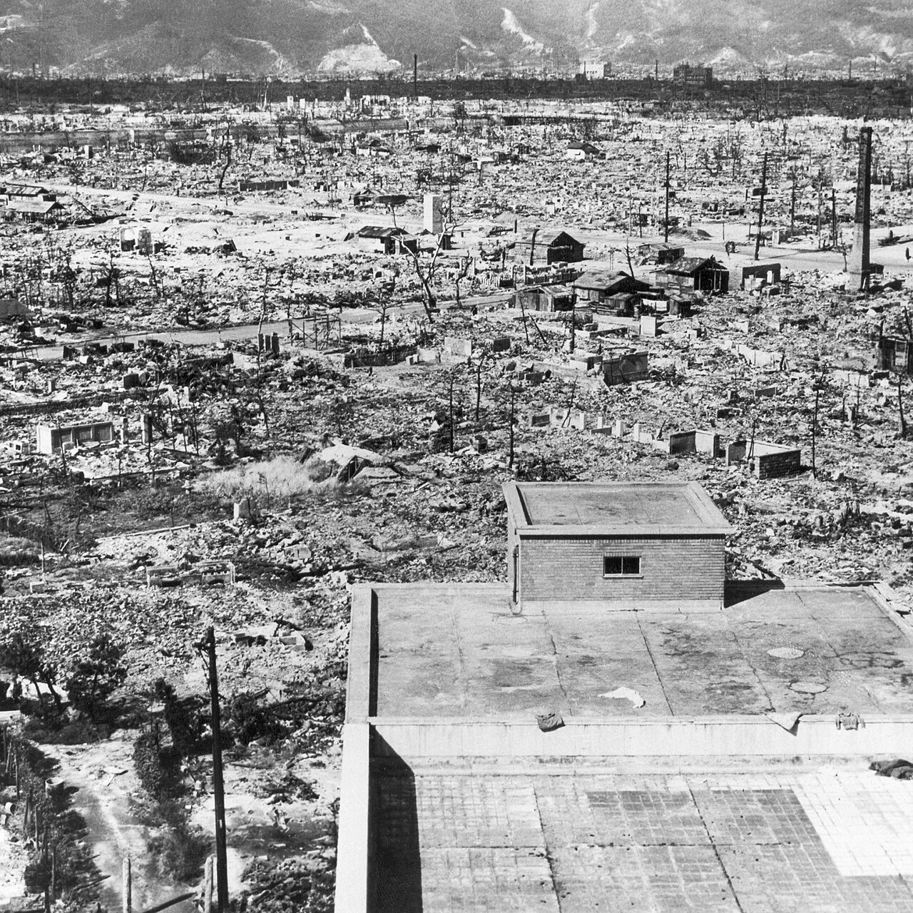
原子彈爆炸後的廣島（Hiroshima），1945
我們看見 一連串事件：有原因，有結果，有教訓。戰爭結束了，城市重建了，人類進步了。
天使看見 一場單一的災難：屍骸不斷堆在他腳前，沒有一具被「解釋」掉。
第 9 週《廣島》：Hersey 沒有寫戰略和數字，寫的是六個人在 8 點 15 分那一刻在做甚麼。
第十一條：勞動與剝削自然
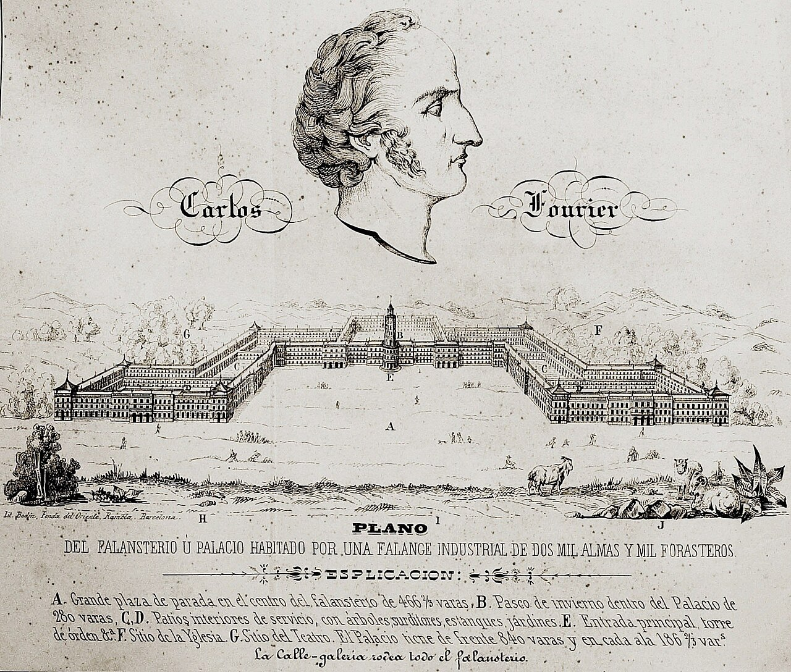
傅立葉（Charles Fourier）設計的社會主義社區「法倫斯泰爾」（phalanstère） 「隨大流一直是社會民主派的組成要素，它不但表現在後者的政治策略上，也表現在其經濟觀點上。這是它日後垮臺的原因之一。沒有任何東西比這樣一種觀念更為致命地腐蝕了德國工人階級，這種觀念就是他們在隨時代潮流而動。 它把技術發展當成大勢所趨，把追隨這一潮流當作任務。以技術進步為目的的工廠勞動給人以它本身包含着一個政治成就的假象，而那種隨潮流而動的觀念離這種假象只有一步之遙。……這種觀念只認識到人類在掌握自然方面的進步，卻沒有認識到社會的倒退。……在這些概念中又一個關於自然的概念，它同1848年革命前社會主義烏托邦理想中的自然概念之間有一種不祥的差異。新的勞動概念簡直就等於剝削自然 ，這種對自然的剝削帶着人們幼稚的心滿意足同對無產階級的剝削形成了對照。……在傅立葉看來，充分的寫作勞動將會帶來這樣的結果：四個月亮將朗照地球的夜空，冰雪將從兩極消融，海水不再是鹹的，飛禽走獸都聽從人的調遣。」第十一條
第十三條：雷同的、空泛的時間
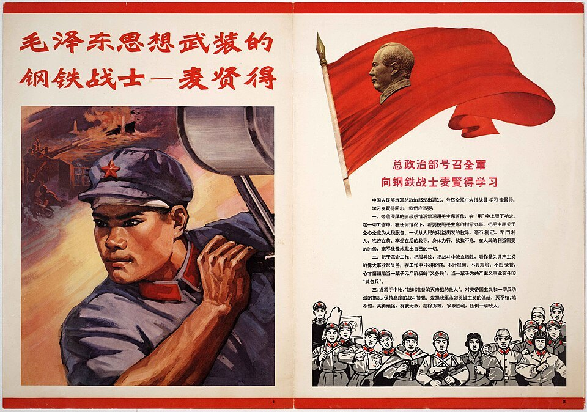
第 10 週：「用毛澤東思想武裝起來的鋼鐵戰士」麥賢得 我們的目標越來越清楚，人越來越機靈。Wilhelm Dietzgen，〈社會民主的宗教〉
「社會民主主義的理論和實踐都是圍繞着『進步』概念形成的。但這個概念本身並不依據現實，而是創造出一些教條主義的宣傳。社會民主黨人心中描繪的進步首先是人類自身的進步 （而不僅是人的能力和知識的增進）。其次，它是一種無止境的事物 ，與人類無限的完美性相一致。第三，它是不可抗拒的 ，它自動開闢一條直線的或螺旋的進程。所有這些論斷都引起了爭吵，招來了批評。但真正的批評必須穿透這些論斷而擊中其共同的基礎。人類歷史的進步概念無法與一種在雷同的，空泛的時間 中的進步概念分開。對後一種進步概念的批判必須成為對進步本身的批判的基礎。」第十三條（homogeneous, empty time）
緊急剎車
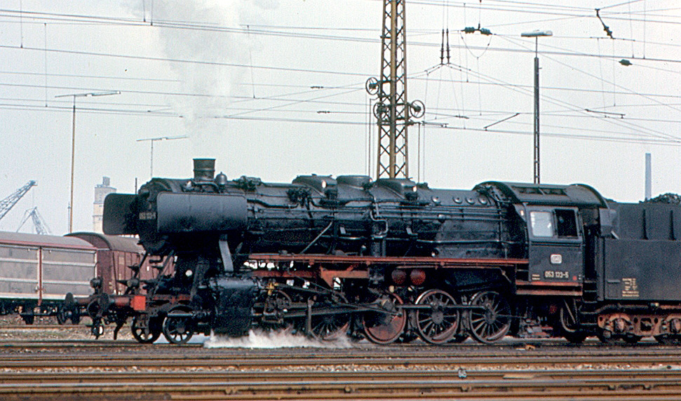
德國 50 型蒸汽機車（1939 年開始生產） Marx says that revolutions are the locomotive of world history. But perhaps it is quite otherwise. Perhaps revolutions are an attempt by the passengers on this train—namely, the human race—to activate the emergency brake.
馬克思說革命是世界歷史的火車頭。但或許事實恰恰相反。或許革命是這列火車上的乘客，也就是人類，試圖啟動緊急剎車的一種嘗試。
〈論歷史概念〉的筆記（GS I.3: 1232；SW 4: 402）
第十四條：向過去的虎躍
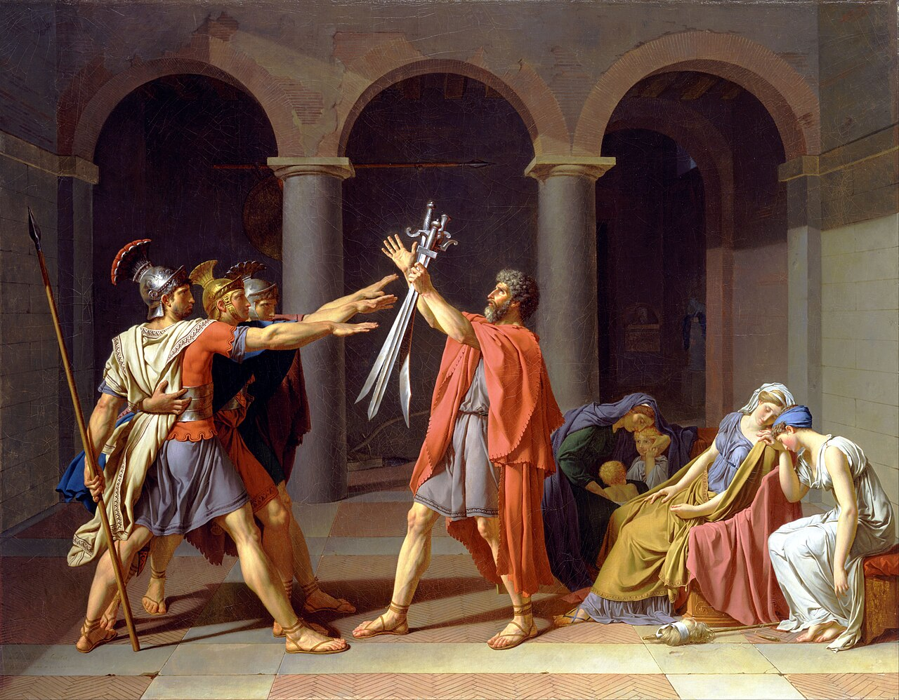
Jacques-Louis David，〈荷拉斯兄弟之誓〉，1784。大革命前夕的法國在古羅馬裏看見自己。 起源即目標。Karl Kraus
「歷史是一個結構的主體，但這個結構並不存在於雷同、空泛的時間裏，而是坐落在被此時此刻的存在所充滿的時間 裏，在羅伯斯庇爾（Robespierre）看來，古羅馬是一個被現在的時間所充滿的過去，在這種時間裏，歷史的慣性連續被打破。法國大革命把自己視為羅馬的再生。它喚回羅馬的方式就像時尚喚回舊日的風範。時尚對時事有一種鑑別力，無論在哪兒它都能在舊日的灌木叢中激動風騷。它像一次虎躍扎入過去。 這一躍無疑發生在統治階級發號施令的競技場裏。在廣闊的歷史天空下，這樣的一躍是一個辯證運動。馬克思就是這樣理解革命的。」第十四條
第十五條：向鐘樓開槍
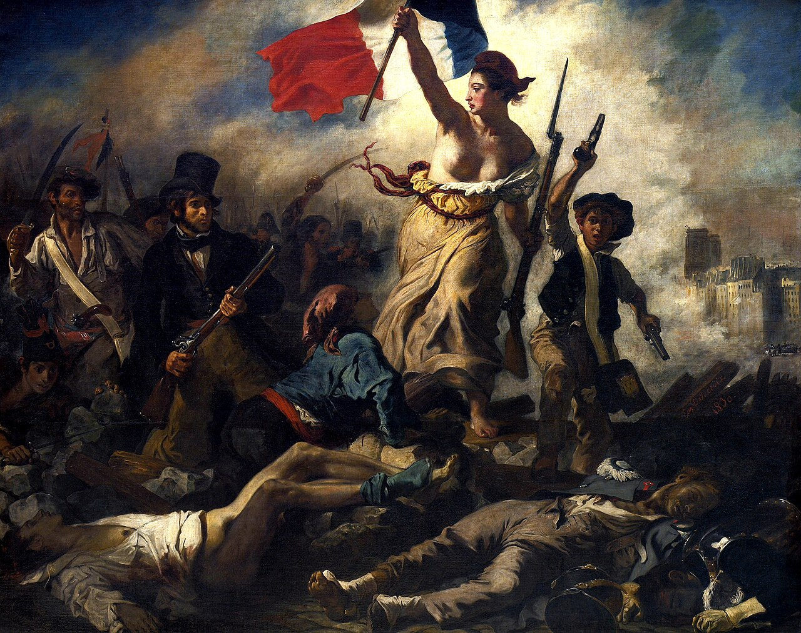
Eugène Delacroix，〈自由引導人民〉，1830：七月革命 「在行動的當兒意識到自己是在打破歷史的連續統一體是革命階級的特徵。偉大的革命引進了一個新的年曆。這個年曆的頭一天像一部歷史的特技攝影機，把時間慢慢拍下來後再快速放映。這個日子頂着節日的幌子不住地循環，而節日是回憶的日子。因此，日曆並不像鐘錶那樣計量時間，而是一座歷史意識的紀念碑。 在歐洲過去的幾百年中，這種意識沒有露出一點蛛絲馬跡。不過七月革命中發生的一件事表明這種意識依然有生命力。在革命的第一個夜晚，巴黎好幾個地方的鐘樓同時遭到射擊。 一位目擊者或許由此得到靈感。他寫道：第十五條
第十六條：「當下」（Jetztzeit）
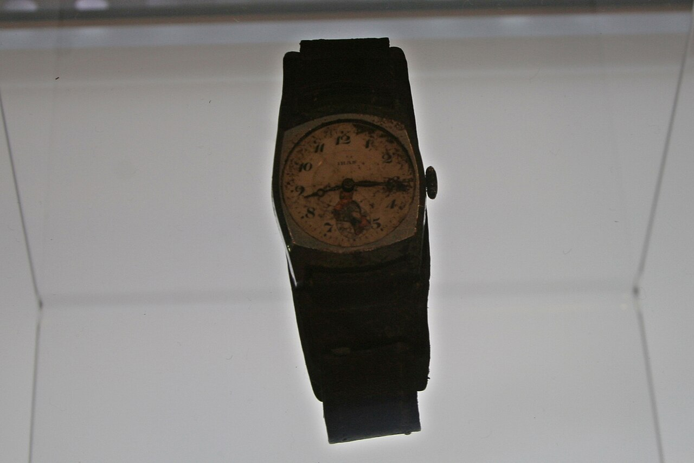
廣島和平紀念資料館：停在 8 點 15 分的手錶 「歷史唯物主義者不能沒有這個『當下』的概念。這個當下不是一個過渡階段。在這個當下裏，時間是靜止而停頓的。 這個當下界定了他書寫歷史的現實環境。歷史主義給予過去一個『永恆』的意象；而歷史唯物主義則為這個過去提供了獨特的體驗。歷史唯物主義者任由他人在歷史主義的窯子裏被一個名叫『從前有一天』的娼妓吸乾，自己卻保持足夠的精力去摧毀歷史的連續統一體 。」第十六條
第 6 週 Wendy O'Brien〈Telling Time〉：創傷的時間停在那一刻，不肯成為「過去」。《餘震》裏的時間也是這樣。
雷同、空泛的時間homogeneous, empty time：事件一個接一個，像一串念珠
Jetztzeit當下：時間靜止而停頓
第十七條：思想結晶為單子
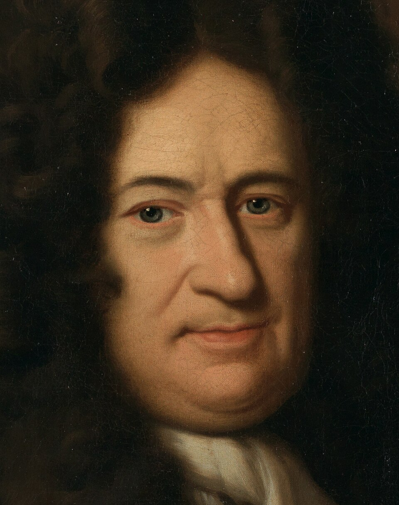
「單子」（monad）一詞借自 Leibniz：一個自足的、映照整個宇宙的單位。 「歷史主義理所當然地落入了普遍歷史的陷阱。唯物主義史學與此不同，在方法上，他比任何其他學派都更清晰。普遍歷史連理論的護甲都沒有。它的方法七拼八湊，只能糾合起一堆材料去填塞同質而空洞的時間。與此相反，唯物主義的歷史寫作建立在一種構造原則的基礎上。思考不僅包含着觀念的流動，也包含着觀念的梗阻。當思考在一個充滿張力和衝突的構造中嘎然而止，它就給予這個構造一次震驚，思想由此而結晶為單子。 歷史唯物主義者只有在作為單子的歷史主體中把握這一主體。在這個結構中，他把歷史事件的懸置視為一種拯救的標記。換句話說，它是為了被壓迫的過去而戰鬥的一次革命機會。 他審度着這個機會，以便把一個特別的時代從同質的歷史進程中剝離出來，把一篇特別的作〔品從〕一生的著述中剝離出來。這種方法的結果是，他一生的著述在那一篇作品中既被保存下來又被勾除掉了，而在那個時代中，整個歷史流程既被保存下來又被勾除掉了。那些被人歷史地領悟了的瞬間是滋養思想的果實，它包含着時間，如同包含着一粒珍貴而無味的種子。」第十七條
附錄 A：念珠與星座
「歷史主義心滿意足地在歷史的不同階段之間確立因果聯繫。但沒有一樁事實因其自身而具備歷史性。 它只在事後的數千年中通過一系列與其毫不相干的事件而獲得歷史性。以此為出發點的歷史學家該不會像提到一串念珠 似的談什麼一系列事件了。他會轉而把握一個歷史的星座 （constellation）。這個星座是他自己的時代與一個確定的過去時代一道形成的。這樣，他就建立了一個『當下』的現在概念。這個概念貫穿於整個救世主時代的種種微小事物之中。」附錄 A
念珠：一個接一個，按時間排好 → 星座：此刻與過去連成一個圖形
附錄 B：彌賽亞側身步入的門洞
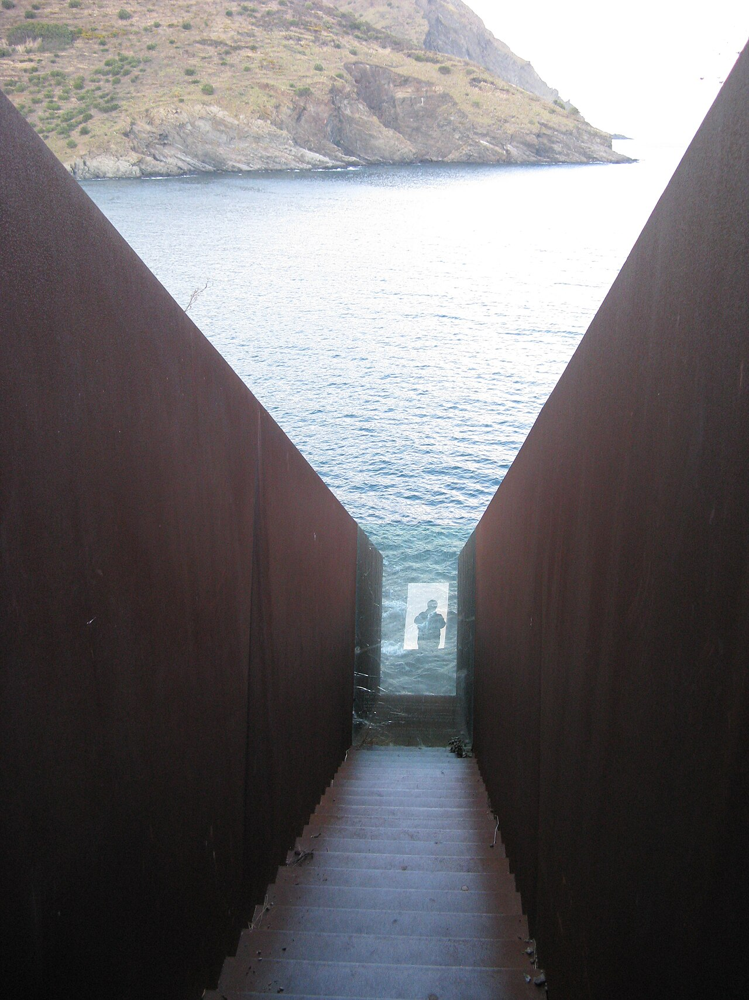
Dani Karavan，〈通道〉（Passages，1994），Portbou 的本雅明紀念碑 「在時間中找到其豐富蘊藏的預言家所體驗的時間既不雷同也不空泛。記住這一點，我們或許就能想見過去是如何在回憶中被體驗到的，因為兩者的方式相同。我們知道猶太人是不准研究未來的。然而猶太教的經文和祈禱卻在回憶中指導他們。這驅除了未來的神祕感。而到預言家那裏尋求啓蒙的人們卻屈服於這種神祕感。這並不是說未來對於猶太人已變成雷同、空泛的時間，而是說時間的分分秒秒都可能是彌賽亞側身步入的門洞。 」附錄 B
寫之不可能
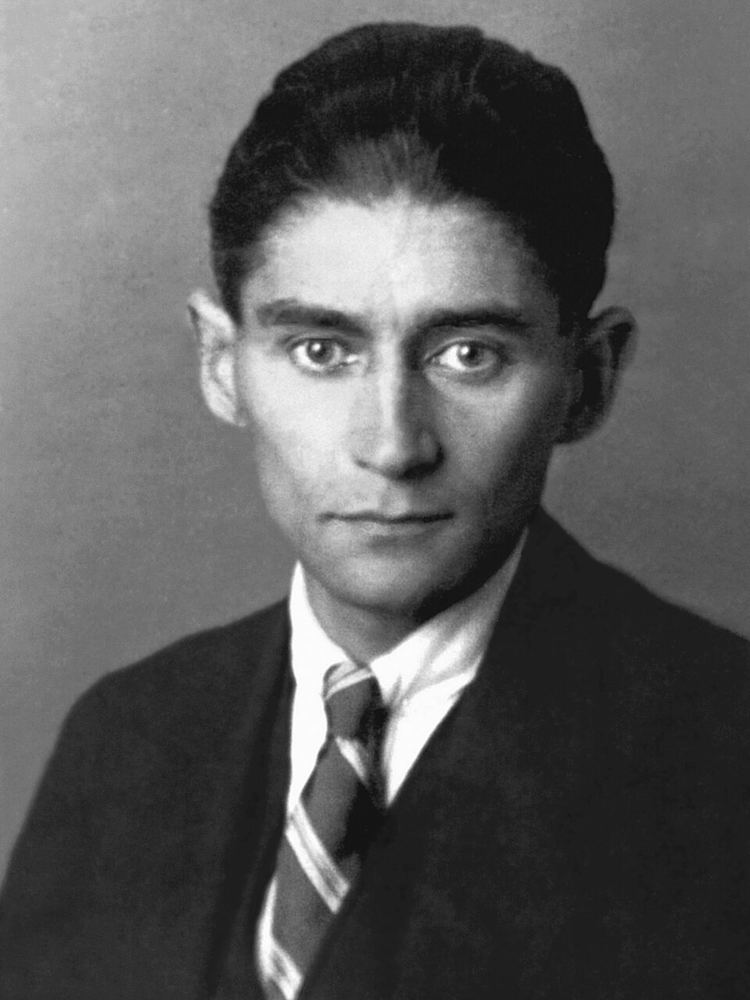
Franz Kafka，1923
「他們生活在三種不可能性中間……：不寫之不可能，用德語寫之不可能，用其他語言寫之不可能。幾乎可以加上第四種不可能性，即寫之不可能 ……」Kafka 致 Max Brod 的信，1921，談說德語的猶太作家
第 3 週：寫還是不寫，這是個問題。這學期讀過的每一位作者，都在這些不可能之間寫作。
這個學期，天使面前的廢墟
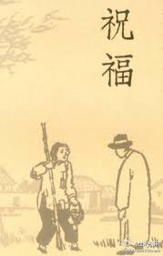
祝福 第 2 週 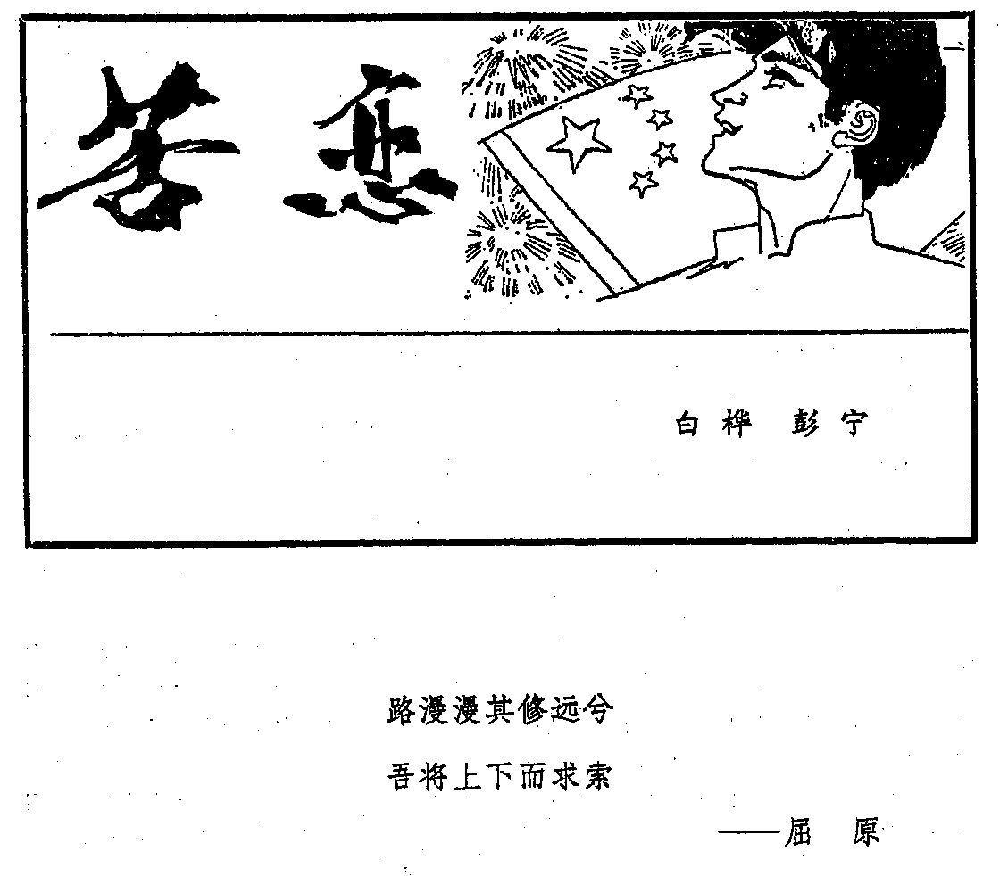
苦戀 第 2 週 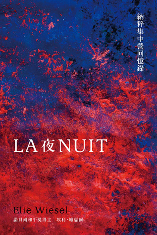
夜 第 3 週 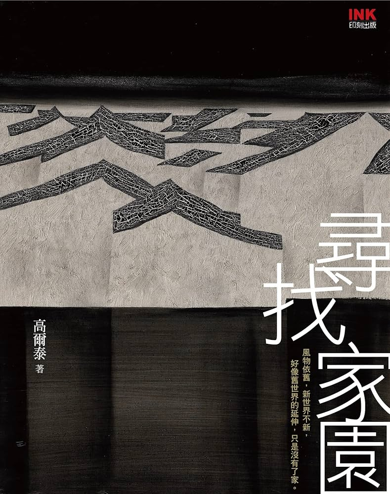
尋找家園 第 4 週 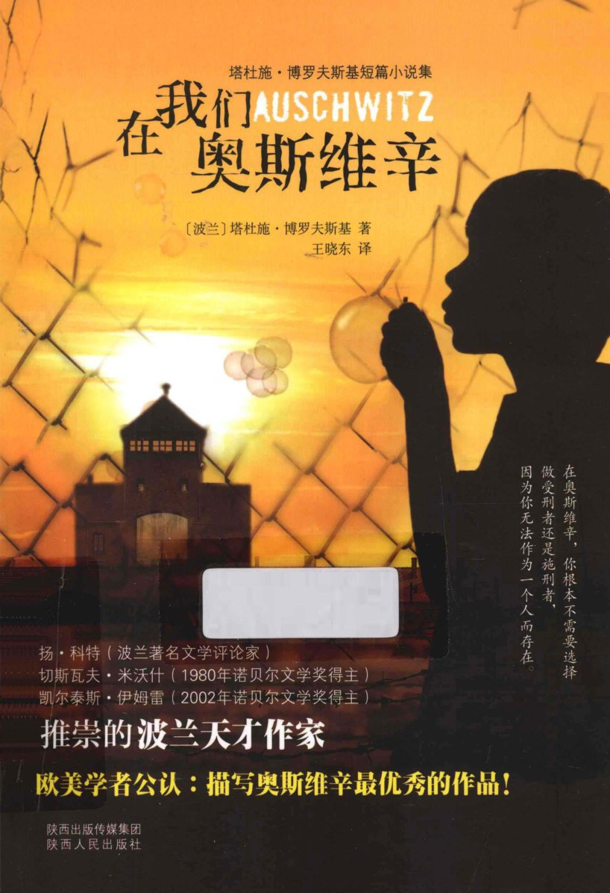
請進毒氣室 第 5 週 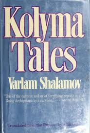
手推車 第 5 週 餘震 第 6 週 少年來了 第 7 週 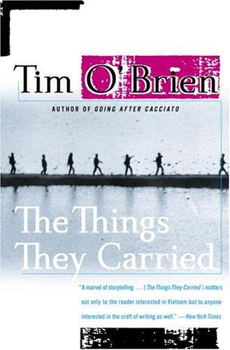
死者的生命 第 8 週 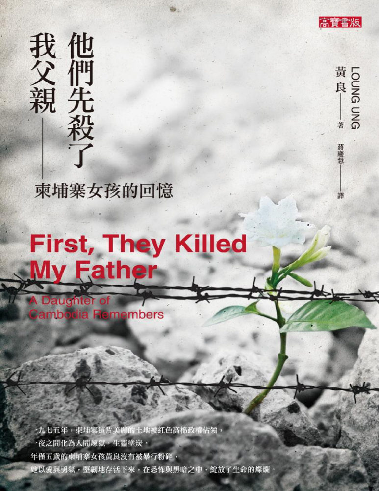
他們先殺了我父親 第 9 週 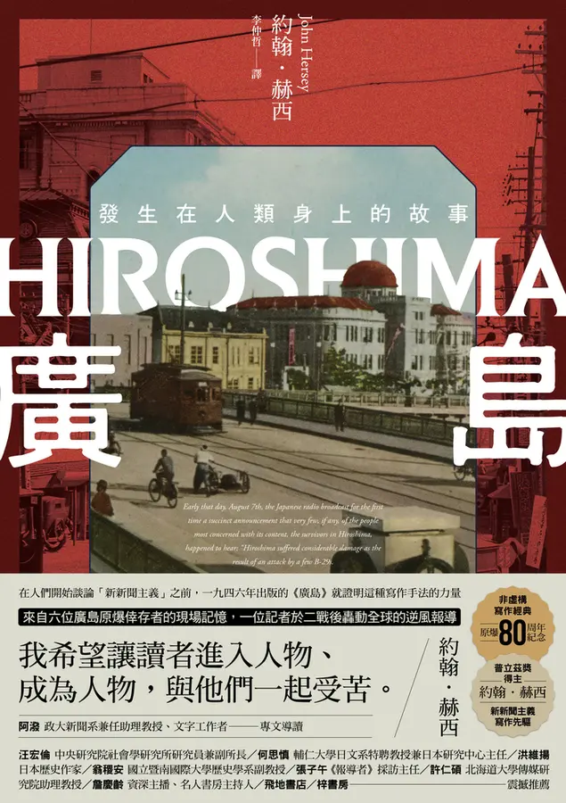
廣島 第 9 週 為人民服務 第 10 週 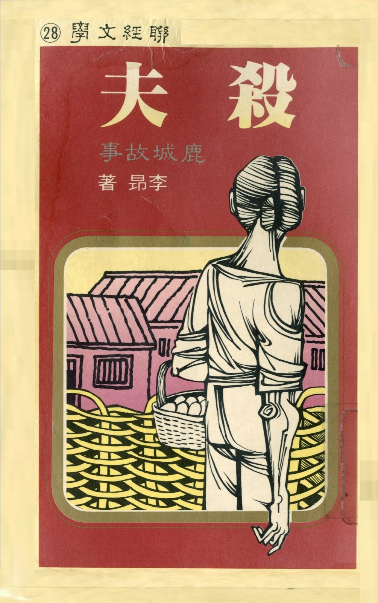
殺夫 第 11 週 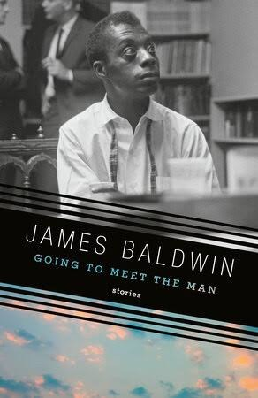
去見那個男人 第 12 週
一串念珠，還是一場單一的災難？
導修（11/26）：雙雪濤《平原上的摩西》
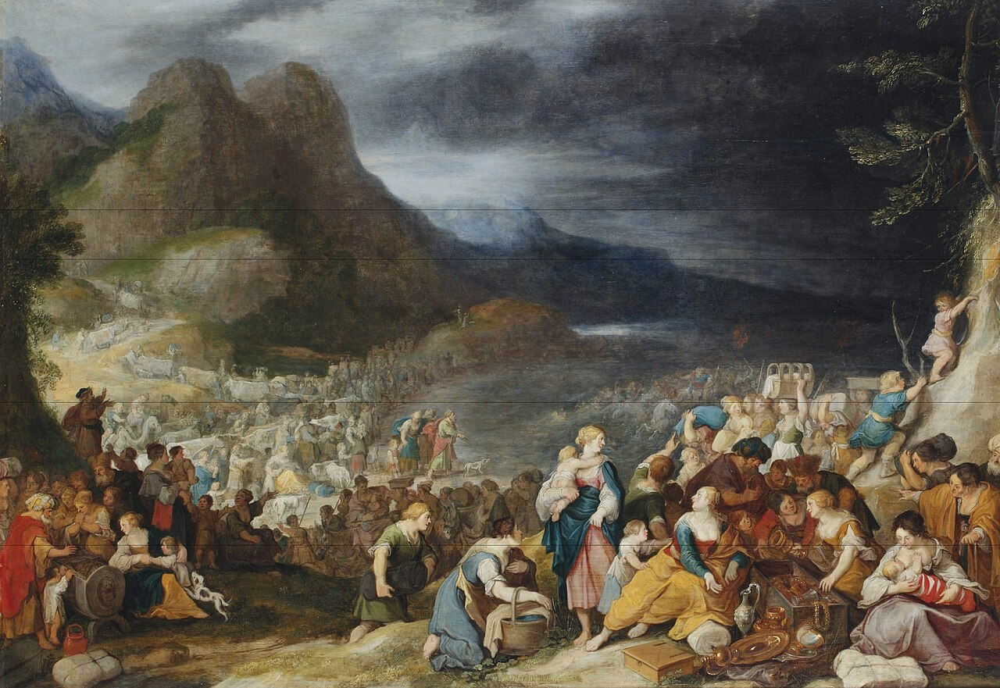
Hans Jordaens III，〈過紅海〉，十七世紀
2015 年的中篇小說。1995 年的瀋陽，工廠倒閉，工人下崗；十二年後，一樁舊案被重新追查。七個人物輪流以第一人稱講述。
· 念珠與星座 ：七段講述怎樣把過去和現在連在一起？
· 歷史的天使 ：小說裏誰在向前看，誰在向後看？
· 彌賽亞 ：標題裏的摩西，指向甚麼樣的救贖？